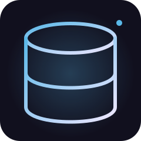
KASAPOS MODÜLÜ
Masa ve Sipariş
Masa açma, kapatma, sipariş ekleme, masa aktarımı, notlar ve adisyon takibi.
Kasapos; restoran, kafe, lokanta ve paket servis işletmeleri için geliştirilmiş Windows tabanlı POS otomasyon sistemidir.

Masa açma, kapatma, sipariş ekleme, masa aktarımı, notlar ve adisyon takibi.
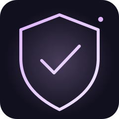
Nakit ve kart, yüzdelik indirim, fiyat değişimi ve satış geçmişi.
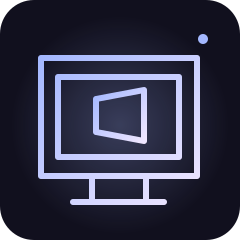
Ürün ve kategori yönetimi, malzeme bağlantısı, otomatik stok düşümü.
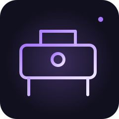
Müşteri telefonu, adres, sipariş kaydı ve durum takibi.
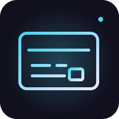
Kendi geliştirdiğimiz Kasapos Connect ile Android telefonunuza gelen aramayı kasa ekranında görün, müşteri bilgisinden hızla paket siparişi açın. Cihaz uyumluluğu kontrol edilir.
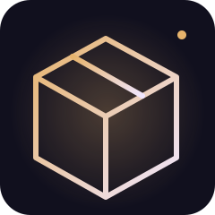
Siparişleri mutfağa iletme, hazırlanıyor, hazır ve teslim durumları.
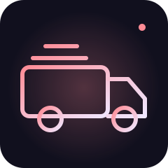
Müşteri, tarih, saat bilgisi ve eski kayıtları temizleme.
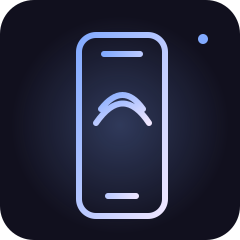
Garson ve yetkili rolleri, işlem kayıtları ve vardiya yönetimi.
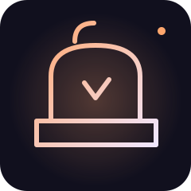
Günlük ciro, nakit/kart, indirim, gün sonu ve satış geçmişi.
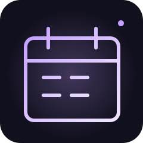
Yerel veritabanı, gün sonu yedekleme ve geri yükleme.
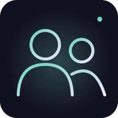
Cihaza özel anahtar, sahip panelinden lisans oluşturma ve süresiz kullanım.
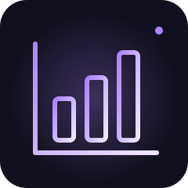
Setup.exe, masaüstü kısayolu ve yerel çalışma altyapısı.
Her iki pakette de tek seferlik ödeme, süresiz yazılım lisansı, QR menü web sitesi hediyesi ve ilk yıl alan adı dahildir.
Kasapos Windows POS yazılımı
Kasapos POS yazılımı, termal yazıcı, kurulum ve eğitim
Kasapos Connect ile Android telefonunuzu kasa bilgisayarına bağlayabilirsiniz. Gelen aramaların otomatik algılanması cihaz modeline ve izinlere bağlıdır; uyumluluk kurulum öncesinde kontrol edilir.
İzmir ve Kütahya içindeki işletmeler için yerinde kurulum desteği.
Türkiye'nin her yerinden teknik destek için bize ulaşabilirsiniz.